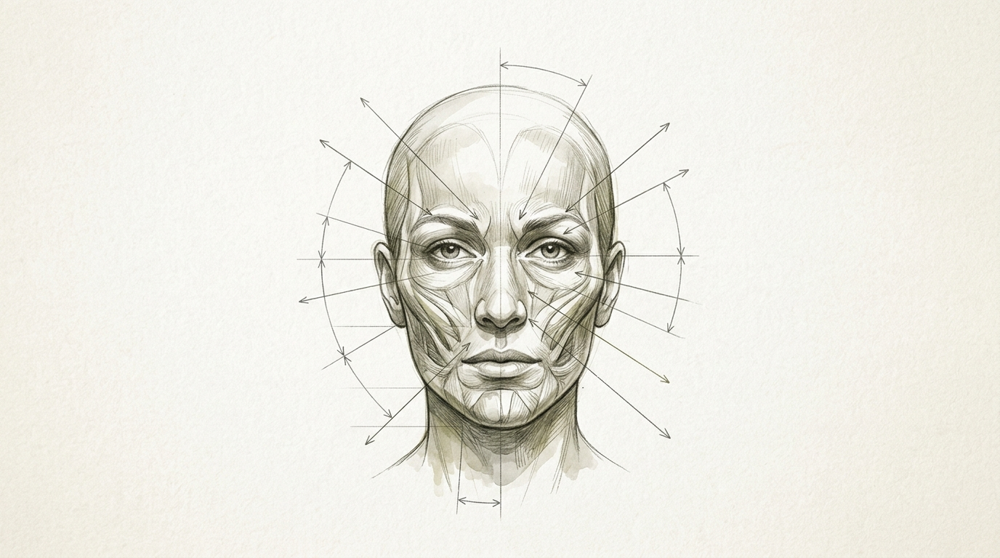

Introduction: How Face Age Estimation Works
Face age estimation is the process of estimating how old someone appears based on visual characteristics of their face. Unlike a normal age calculator, which uses your date of birth to determine chronological age, a face-age estimator works from an image and provides an approximate apparent age.
Modern photo-based age estimation can consider multiple visible characteristics, including facial structure, skin appearance, proportions, expression, lighting and image quality. However, the result is an estimate—not a measurement of your actual or biological age. You can also try our Face Age Calculator to explore an estimated face age from a suitable photograph.
In this guide, we will explain how face age estimation works, what information a photo can provide, why results vary, and what you should consider when using an online face-age calculator.
What Is Face Age Estimation?
Face age estimation attempts to answer a specific visual question: “Based on this person's visible facial appearance, approximately how old might they appear to be?”
It is important to recognize that facial age estimation is fundamentally distinct from legal identity verification, clinical health assessment, or chronological record-keeping. While a calendar counts elapsed time with mathematical certainty, an apparent-age algorithm evaluates optical patterns captured in a single two-dimensional photograph.
| Type | Main Question | Typical Input |
|---|---|---|
| Chronological age | How long have you lived? | Date of birth |
| Face age | How old might you appear? | Photograph |
| Biological age | How old does your physiology appear? | Biological/health indicators |
| Age verification | Are you above a required age? | Identity/verification evidence |
Understanding these distinct categories prevents confusion when an image-based tool generates an age estimate that differs from the date on your birth certificate or the results of a physical fitness examination.
How Does Face Age Estimation Work?
Modern facial age estimation follows a structured computational journey from image ingestion to final numerical output. While individual software systems implement proprietary mathematical variations, the foundational computer vision workflow encompasses four essential stages.
The 4-Step Face Age Estimation Pipeline
From an input photograph to an apparent-age estimate, computer vision algorithms isolate geometry, texture, and structural ratios through sequential processing stages.
Step 1: The System Receives a Photograph
A digital photograph provides the initial raw data for analysis. Rather than perceiving human anatomy, a computer vision system initially encounters a matrix of numerical pixel values spanning red, green, and blue (RGB) color channels. Environmental factors during image capture—including pixel resolution, illumination levels, lens focal length, camera angle, and facial visibility—dictate the breadth and quality of optical information available to subsequent algorithms.
Step 2: The Face Is Located in the Image
Before any age-related characteristics can be evaluated, the software must determine whether a human face is present and where its boundaries lie. Facial localization algorithms scan the image canvas to identify standard structural configurations—such as the horizontal alignment of two eyes above a nose and mouth. Once identified, a bounding box isolates the face, and spatial alignment routines rotate and scale the portrait to a standardized vertical orientation.
Step 3: Visible Facial Characteristics Are Analyzed
With the face isolated, the system measures visible characteristics that historically correlate with physical maturity. These include:
- Facial proportions: The relative vertical and horizontal distances between the forehead, pupillary line, nose base, and chin.
- Contours and jawline definition: The softness or sharpness of the jawline and cheek planes.
- Visible skin texture: Micro-gradients in pixel intensity corresponding to skin smoothness or furrowing.
- Lines and creases: Contrast variations across the forehead, nasolabial folds, and periorbital eye region.
- Eye-region appearance: Upper eyelid position, under-eye shadow depth, and brow distance.
- Bilateral symmetry: The natural balance of facial features across the vertical midline.
Important note: The exact characteristics and weighting depend on the age-estimation system being used. Some tools rely on explicit landmark geometry, while deep convolutional neural networks extract complex multi-layered feature abstractions across thousands of image nodes.
Step 4: The System Produces an Age Estimate
In the final phase, the system maps the extracted feature vectors against statistical regression models or demographic training distributions. The algorithm computes an estimated apparent age or confidence bracket (for example, 32–36 years). It is vital to recognize that this mathematical synthesis represents apparent visual maturity in that specific image, rather than an occult discovery of your actual calendar birthday.
What Facial Features Can Influence an Age Estimate?
Human age perception and automated computer vision algorithms both evaluate multiple anatomical domains simultaneously. Rather than relying on a single visual clue, age estimation synthesizes features across five key areas.
1. Facial Proportions
Craniofacial bone structure naturally evolves throughout life. Childhood features smaller lower facial thirds, while adulthood brings mandibular elongation and balanced horizontal thirds.
2. Skin Appearance
Surface light scattering, collagen elasticity, hydration levels, and fine micro-creases influence how optical algorithms evaluate dermal smoothness versus mature texture.
3. Eye-Area Contours
Periorbital contours, brow position, tear-trough depth, and orbital tissue firmness strongly influence both human and algorithmic apparent-age perception.
Facial Proportions and Skeletal Balance
The human skull undergoes subtle remodeling throughout life. In young adulthood, skeletal projection supports firm soft tissue, maintaining distinct separation between the cheekbones and lower jaw. In later decades, natural remodeling of the maxilla and mandible subtly alters the facial profile. Vision algorithms measure these geometric distances between facial landmarks to benchmark structural maturity.
Skin Appearance and Light Scattering
Youthful skin contains dense, organized collagen bundles that scatter incident light evenly, producing a soft diffuse glow. As skin matures, natural reductions in elastin and dermal hydration alter surface reflectance. When direct light strikes mature skin, micro-shadows form within fine expression creases, which algorithmic filters detect as high-frequency edge gradients.
The Periorbital Eye Region
The skin surrounding the eyes is the thinnest on the human body (approximately 0.5 mm thick). Consequently, fatigue, dehydration, allergic inflammation, and chronological aging manifest rapidly around the eyes. Dark circles, mild puffiness, or temporary squinting lines can cause an automated tool to assign an older apparent age even when bone structure remains unchanged.
Facial Contours and Subcutaneous Volume
Natural fat pads provide youthful mid-face projection. Over time, gravity and gradual volume redistribution create deeper nasolabial folds between the nose and mouth corners, as well as subtle marionette lines near the chin. Strong overhead lighting amplifies these natural contours by casting harsh down-facing shadows.
Overall Holistic Impression
Crucially, apparent age does not stem from any single isolated feature. An individual with fine smile lines may appear remarkably youthful due to balanced skeletal proportions, vibrant skin radiance, and clear eyes. Algorithms evaluate the totality of visible cues.
Methodological Reminder: A face-age estimate should never be interpreted as a clinical diagnosis of skin health, biological aging, or overall systemic health. It is an optical evaluation of photograph appearance.
Does AI Really Know Your Age?
No. An AI-based age estimator does not know your exact chronological age simply by looking at a photograph.
It is easy to misunderstand computer vision models as possessing superhuman intuition. In reality, artificial intelligence cannot read biological clocks or look through skin tissue into bone marrow. What AI models actually do is compare pattern similarities between your image pixels and thousands of labeled training portraits.
Because mathematical algorithms evaluate surface reflectance and geometric landmark distances, the relationship can be expressed simply:
Actual Age ≠ Estimated Face Age
An AI model has no access to hospital records, birth certificates, or civil databases. Its estimate is entirely dependent on the specific visual qualities of the photograph submitted.
Why Can Face Age Estimates Be Different Across Photos?
If you upload three different photos of yourself taken during the same week, you might receive three completely different age estimates. This discrepancy occurs because seven major environmental and stylistic variables dramatically alter the visual information captured by a camera sensor.
Lighting Direction and Softness
Harsh overhead sun or direct fluorescent ceiling fixtures cast dark downward shadows beneath the brow, nose, and jawline, accentuating facial creases. Diffused, soft ambient light fills shadows and renders skin texture evenly.
Camera Angle and Elevation
A downward-tilted selfie angle broadens forehead proportions and slims the lower face, producing a younger perception. A low upward angle exaggerates under-chin tissue and jaw weight.
Facial Expression and Muscle Tension
Laughing, smiling broadly, or squinting engages facial muscles, creating temporary dynamic lines around the eyes and cheeks. A neutral, relaxed facial posture displays baseline resting anatomy.
Image Quality and Sensor Resolution
Severe JPEG compression, digital motion blur, and low-resolution sensors obscure facial landmarks. Conversely, hyper-sharp macro lenses under harsh flash can artificially exaggerate micro-pores.
Cosmetics and Skin Preparation
Matte foundations, concealers, and contouring powders visually reshape shadows and smooth skin color gradients, shifting algorithmically detected texture values.
Hairstyle and Facial Hair
Hair framing alters perceived face shape. Bangs cover forehead lines, while heavy beards conceal mandibular contours, prompting algorithms to rely solely on upper-face cues.
Filters and Post-Processing
Social media beauty filters artificially widen eyes, blur dermal texture, and narrow the chin, completely modifying the structural geometry that estimators measure.
Visual Guide: What the Camera Sees During Facial Analysis
To understand why photographs fluctuate, consider the diagram below illustrating the anatomical zones evaluated during computer vision inspection.

What Happens If You Upload a Different Photo?
To demonstrate how environmental variables alter algorithmic calculations, examine the simulated comparison table below featuring four distinct photographs of the same 35-year-old individual taken within 48 hours.
| Photo Sample | Environmental Conditions | Algorithmic Effect | Estimated Age |
|---|---|---|---|
| Photo A | Diffused daylight, eye-level, neutral expression | Balanced landmark geometry, clear facial information | 34 years (Baseline) |
| Photo B | Direct overhead light, strong side shadows | Accentuated nasolabial folds and deep brow shadows | 39 years (+5 years) |
| Photo C | Broad smile, sunny outdoor portrait | Contracted periorbital muscles, animated expression | 36 years (+2 years) |
| Photo D | Low-light indoor selfie, front-camera noise | Pixelated textures, blurred boundary contours | 31 years (-3 years) |
This variance underscores why a single photo-based estimate should always be treated as an approximate snapshot of appearance rather than an immutable truth.
How Accurate Is Face Age Estimation?
When considering accuracy, responsible biometric science avoids blanket percentage promises such as “99% accurate.” In computer vision literature, accuracy is measured using Mean Absolute Error (MAE)—the average difference between estimated apparent age and actual chronological age across thousands of diverse test subjects.
Under controlled laboratory benchmarks (uniform studio lighting, frontal gaze, high-resolution cameras), state-of-the-art vision models typically achieve an MAE between 2.8 and 4.2 years. However, when applied to real-world consumer photographs (“in-the-wild” images), accuracy is subject to multiple confounding factors:
- Image quality and focus: Sharpness, lens flare, motion blur, and sensor grain.
- Facial visibility: Obstruction from hair, eyeglasses, headwear, or hands.
- Illumination symmetry: Unbalanced side lighting creates optical illusions of structural asymmetry.
- Facial muscle movement: Exaggerated smiles, frowns, or yawning.
- Dataset demographic distribution: How extensively the underlying training algorithms were exposed to diverse ages, ethnicities, and gender presentations.
- Biological variation between individuals: Natural genetic differences mean two people of identical calendar age can possess naturally different facial structures.
Face Age Estimation vs Biological Age vs Chronological Age
One of the most frequent points of user confusion is conflating face age with biological age. While both terms describe aspects of physical condition, they measure completely different physiological dimensions.
| Measurement | Primary Basis | Methodology | Main Purpose |
|---|---|---|---|
| Chronological Age | Calendar time elapsed since birth | Exact mathematical computation from birth certificate | Calculate actual age, legal milestones & retirement rights |
| Face (Apparent) Age | Visible outward facial appearance | Computer vision extraction of optical landmarks & textures | Estimate apparent age from photograph for curiosity & insight |
| Biological Age | Internal physiological organ & cellular vitality | Biomarkers, DNA methylation clocks, VO2 max & blood panels | Explore physiological aging, wellness & preventative health |
You can calculate your calendar lifespan with our precise Age Calculator, evaluate apparent age with our Face Age Calculator, or explore cellular vitality using our dedicated Biological Age Calculator.
Can Face Age Estimation Be Used for Age Verification?
No—face age estimation cannot and should not be used as standalone age verification.
It is vital to draw a strict boundary between age estimation and legal age verification:
- Face Age Estimation produces an approximate statistical guess of apparent maturity. It provides probabilistic guidance based on optical characteristics.
- Age Verification requires authoritative legal proof—such as government-issued photo IDs, biometric passport chips, or cryptographic bank identity assertions—to confirm with certainty that an individual is above a legal threshold (e.g., 18 or 21 years old).
Because environmental variables such as lighting, makeup, and camera angles can shift an apparent-age estimate by several years, relying solely on an optical estimate for legal age compliance is inappropriate and unsafe.
How to Get a Better Face Age Estimate From a Photo
If you want to test your apparent age and ensure the algorithm receives clear, reliable visual data, follow these practical photo recommendations.
✓ Recommended Practices
- Use balanced, natural lighting: Stand facing a window with soft, diffused daylight.
- Maintain a neutral facial expression: Keep your forehead and jaw relaxed without squinting.
- Look directly into the camera lens: Ensure both eyes and ears are symmetrically positioned.
- Hold camera at eye level: Avoid high-angle selfies or low chin-up perspectives.
- Ensure clear facial visibility: Tuck stray hair behind your ears and remove tinted glasses.
- Use native camera resolution: Avoid heavily compressed social media screenshots.
✕ Conditions to Avoid
- Harsh overhead light bulbs: Avoid direct down-facing spotlights that cast dark shadows.
- Heavy digital filters: Do not use smoothing, eye-enlarging, or face-slimming presets.
- Extreme head tilts or side profiles: Steer clear of three-quarter or profile angles.
- Low-resolution, blurry photos: Avoid dark night shots or pixelated crops.
- Face obstructions: Avoid hands on chin, scarves, or hats casting brow shadows.
- Heavy theatrical cosmetics: Avoid dramatic contouring designed to alter bone shadows.
From Photo to Estimate: The Algorithmic Flow
To summarize how modern computer vision translates visual pixels into a numerical apparent-age result, explore the interactive flow structure below.
From Image Pixels to Apparent Age
Every step in the estimation journey filters optical data to produce a reliable, privacy-preserving apparent-age prediction.
Explore Your Apparent Age Today
Curious about how old you appear in a photograph? The verified Face Age Calculator processes your photo securely inside your browser without uploading your personal image to remote servers.
Try the Face Age Calculator →Frequently Asked Questions
What is face age estimation?
Face age estimation is the process of estimating a person's apparent age from visible facial characteristics in an image, such as craniofacial proportions, skin surface texture, and eye contours.
How does facial age estimation work?
A system analyzes a photograph, detects the face, extracts structural landmarks and skin texture patterns, and uses statistical models to generate an approximate age estimate.
Can AI estimate age from a photo?
Yes. AI-based systems trained on diverse portrait datasets can identify visual patterns associated with age brackets, although the resulting number is always an approximation.
Is face age the same as actual age?
No. Face age refers to outward apparent age, while chronological age is determined strictly by the number of calendar years elapsed since your date of birth.
Why does my estimated face age change between photos?
Lighting, facial expression, camera angle, resolution, focal length, makeup, and hair framing alter the visible geometry and shadows on the face, causing estimates to fluctuate across different photographs.
How accurate is a face age calculator?
Results vary by system and image quality. A face-age calculator provides an approximate estimate rather than an exact chronological or biological age measurement.
Can face age tell me my biological age?
No. Facial appearance alone cannot measure internal biological health, telomere length, cardiovascular fitness, or epigenetic cellular aging.
Can face age estimation verify someone's legal age?
No. An apparent-age estimate should never be treated as legal proof of age or used as a substitute for government-issued identification credentials.
Conclusion: Understanding Apparent Facial Age
Face age estimation is essentially an attempt to answer a simple, relatable question: “How old does this person appear to be?”
A photograph contains hundreds of visual cues that influence perceived age, including craniofacial proportions, skin appearance, lighting, and camera angle. Age-estimation algorithms analyze these optical signals to produce an approximate apparent-age result.
However, face age is fundamentally distinct from your true chronological age or internal biological age. When you test a photograph using our Face Age Calculator, treat the result as an enjoyable, informative perspective on visual perception rather than a fixed medical or chronological judgment.
Reviewed & Methodology
Reviewed by: Navjeet Kamboj
Focus: Computer vision pipeline architecture, biometric terminology, responsible algorithmic interpretation, and user privacy standards.
Last reviewed: October 3, 2026
Methodological Notice: All age calculations and biometric estimations published on Age Calculator Lab are developed for educational, exploratory, and general informational purposes. They do not constitute clinical diagnoses, legal age determinations, or forensic biometric verifications.